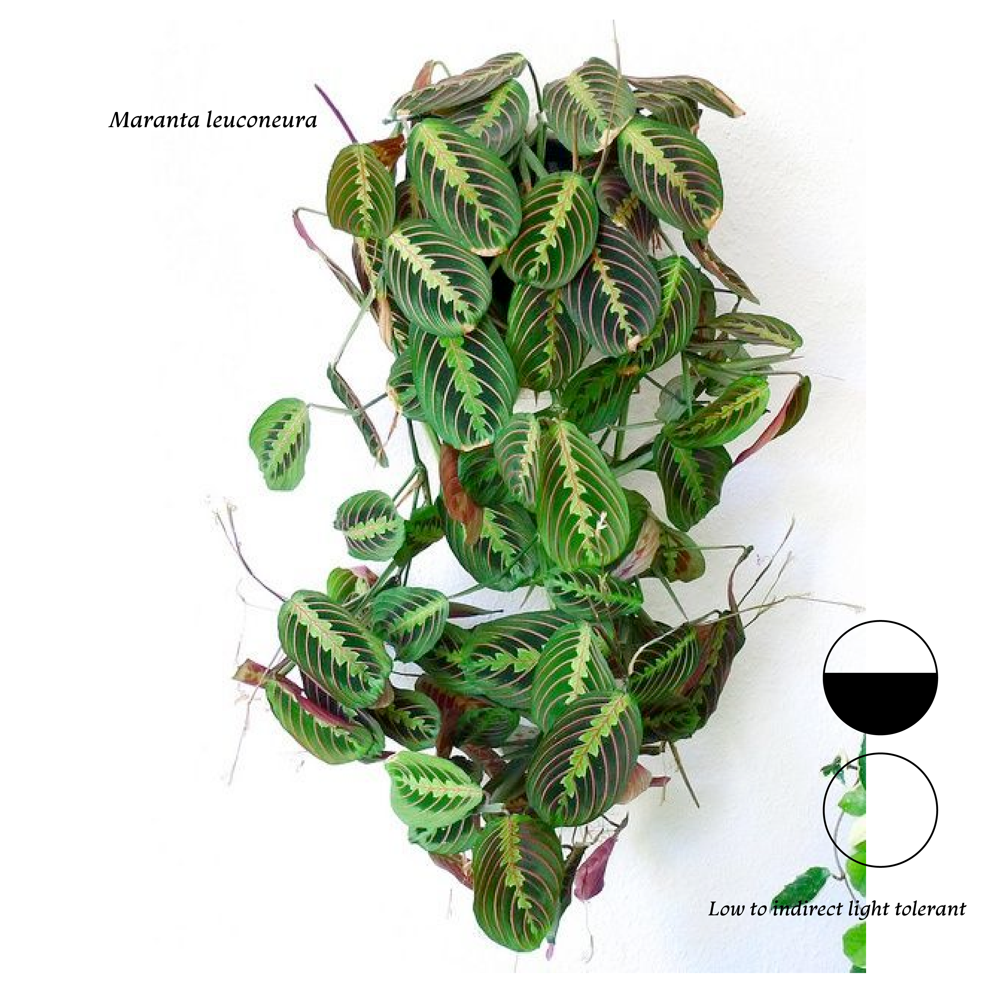

<!DOCTYPE html>
<html lang="en"></html>
<head>
    <meta charset+"UTF-8"
    <meta name+"viewport
    content=width=device-width, initial-scale=1.0" />
    <link rel="stylesheet" href="style.css"/>
    <title>Low Light Houseplants-Prayer Plant</title>
    <style>
        body {
          background-image: url('prayerplant-background.jpg');
          background-attachment: fixed;
          background-repeat: no-repeat;
          background-size: cover;
        }
    </style>
</head>
<body>
    <main class="grid-2">
        <section>
          <div class="grid-2 inner-grid">
            <div style="float: left;">
                
            </div>
            <div style="align: left;">
                
              </div>
            <p style='color: rgb(232, 247, 215); font-size: 14px; font-family: 'Courier New', Courier, monospace;>Maranta leuconeura, also known as prayer plant, is a species of flowering plant in the family Marantaceae, native to the Brazilian tropical forests.[1] It is a variable, rhizomatous perennial, growing to 30 cm (12 in) tall and broad, with crowded clumps of evergreen, strikingly-marked oval leaves, each up to 12 cm (5 in) long. The current thinking is that prayer plants pray to reduce fungus and bacteria forming on their leaves. Plants belonging to the Marantaceae family are found naturally in rainforests. During the day, they open their leaves out in order to soak up as much light as possible. To avoid brown leaf tips, keep the soil evenly moist, avoid dry air, and leach frequently to avoid mineral salt build-up.</p>
            
          </div>
        </section>
    </main>
    </div>
    <nav><a href="page2.html">Snake Plant</a></nav>
    <nav><a href="page3.html">Pothos </a></nav>
    <nav><a href="page5.html">Lucky Bamboo</a></nav>
    <nav style='color:rgb(88, 128, 129)'> Prayer Plant</nav>
    <nav><a href="index.html">Home</nav></nav>
</body>
</html>